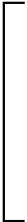

15The Vector Potential
15–1The forces on a current loop; energy of a dipole
In the last chapter we studied the magnetic field produced by a small rectangular current loop. We found that it is a dipole field, with the dipole moment given by \begin{equation} \label{Eq:II:15:1} \mu=IA, \end{equation} where $I$ is the current and $A$ is the area of the loop. The direction of the moment is normal to the plane of the loop, so we can also write \begin{equation*} \FLPmu=IA\FLPn, \end{equation*} where $\FLPn$ is the unit normal to the area $A$.
A current loop—or magnetic dipole—not only produces magnetic fields, but will also experience forces when placed in the magnetic field of other currents. We will look first at the forces on a rectangular loop in a uniform magnetic field. Let the $z$-axis be along the direction of the field, and the plane of the loop be placed through the $y$-axis, making the angle $\theta$ with the $xy$-plane as in Fig. 15–1. Then the magnetic moment of the loop—which is normal to its plane—will make the angle $\theta$ with the magnetic field.
Since the currents are opposite on opposite sides of the loop, the forces are also opposite, so there is no net force on the loop (when the field is uniform). Because of forces on the two sides marked $1$ and $2$ in the figure, however, there is a torque which tends to rotate the loop about the $y$-axis. The magnitude of these forces $F_1$ and $F_2$ is \begin{equation*} F_1=F_2=IBb. \end{equation*} Their moment arm is \begin{equation*} a\sin\theta, \end{equation*} so the torque is \begin{equation*} \tau=IabB\sin\theta. \end{equation*} or, since $Iab$ is the magnetic moment of the loop, \begin{equation*} \tau=\mu B\sin\theta. \end{equation*} The torque can be written in vector notation: \begin{equation} \label{Eq:II:15:2} \FLPtau=\FLPmu\times\FLPB. \end{equation} Although we have only shown that the torque is given by Eq. (15.2) in one rather special case, the result is right for a small loop of any shape, as we will see. The same kind of relationship holds for the torque of an electric dipole in an electric field: \begin{equation*} \FLPtau=\FLPp\times\FLPE. \end{equation*}
We now ask about the mechanical energy of our current loop. Since there is a torque, the energy evidently depends on the orientation. The principle of virtual work says that the torque is the rate of change of energy with angle, so we can write \begin{equation*} dU=\tau\,d\theta. \end{equation*} Setting $\tau=\mu B\sin\theta$, and integrating, we can write for the energy \begin{equation} \label{Eq:II:15:3} U=-\mu B\cos\theta+\text{a constant}. \end{equation} (The sign is negative because the torque tries to line up the moment with the field; the energy is lowest when $\FLPmu$ and $\FLPB$ are parallel.)
For reasons which we will discuss later, this energy is not the total energy of a current loop. (We have, for one thing, not taken into account the energy required to maintain the current in the loop.) We will, therefore, call this energy $U_{\text{mech}}$, to remind us that it is only part of the energy. Also, since we are leaving out some of energy anyway, we can set the constant of integration equal to zero in Eq. (15.3). So we rewrite the equation: \begin{equation} \label{Eq:II:15:4} U_{\text{mech}}=-\FLPmu\cdot\FLPB. \end{equation} Again, this corresponds to the result for an electric dipole: \begin{equation} \label{Eq:II:15:5} U=-\FLPp\cdot\FLPE. \end{equation}
Now the electrostatic energy $U$ in Eq. (15.5) is the true energy, but $U_{\text{mech}}$ in (15.4) is not the real energy. It can, however, be used in computing forces, by the principle of virtual work, supposing that the current in the loop—or at least $\mu$—is kept constant.
We can show for our rectangular loop that $U_{\text{mech}}$ also corresponds to the mechanical work done in bringing the loop into the field. The total force on the loop is zero only in a uniform field; in a nonuniform field there are net forces on a current loop. In putting the loop into a region with a field, we must have gone through places where the field was not uniform, and so work was done. To make the calculation simple, we shall imagine that the loop is brought into the field with its moment pointing along the field. (It can be rotated to its final position after it is in place.)
Imagine that we want to move the loop in the $x$-direction—toward a region of stronger field—and that the loop is oriented as shown in Fig. 15–2. We start somewhere where the field is zero and integrate the force times the distance as we bring the loop into the field.
First, let’s compute the work done on each side separately and then take the sum (rather than adding the forces before integrating). The forces on sides $3$ and $4$ are at right angles to the direction of motion, so no work is done on them. The force on side $2$ is $IbB(x)$ in the $x$-direction, and to get the work done against the magnetic forces we must integrate this from some $x$ where the field is zero, say at $x=-\infty$, to $x_2$, its present position: \begin{equation} \label{Eq:II:15:6} W_2=-\int_{-\infty}^{x_2}F_2\,dx=-Ib\int_{-\infty}^{x_2}B(x)\,dx. \end{equation} Similarly, the work done against the forces on side $1$ is \begin{equation} \label{Eq:II:15:7} W_1=-\int_{-\infty}^{x_1}F_1\,dx=Ib\int_{-\infty}^{x_1}B(x)\,dx. \end{equation} To find each integral, we need to know how $B(x)$ depends on $x$. But notice that side $1$ follows along right behind side $2$, so that its integral includes most of the work done on side $2$. In fact, the sum of (15.6) and (15.7) is just \begin{equation} \label{Eq:II:15:8} W=-Ib\int_{x_1}^{x_2}B(x)\,dx. \end{equation} But if we are in a region where $B$ is nearly the same on both sides $1$ and $2$, we can write the integral as \begin{equation*} \int_{x_1}^{x_2}B(x)\,dx=(x_2-x_1)B=aB, \end{equation*} where $B$ is the field at the center of the loop. The total mechanical energy we have put in is \begin{equation} \label{Eq:II:15:9} U_{\text{mech}}=W=-Iab\,B=-\mu B. \end{equation} The result agrees with the energy we took for Eq. (15.4).
We would, of course, have gotten the same result if we had added the forces on the loop before integrating to find the work. If we let $B_1$ be the field at side $1$ and $B_2$ be the field at side $2$, then the total force in the $x$-direction is \begin{equation*} F_x=Ib(B_2-B_1). \end{equation*} If the loop is “small,” that is, if $B_2$ and $B_1$ are not too different, we can write \begin{equation*} B_2=B_1+\ddp{B}{x}\,\Delta x=B_1+\ddp{B}{x}\,a.\notag \end{equation*} So the force is \begin{equation} \label{Eq:II:15:10} F_x=Iab\,\ddp{B}{x}. \end{equation} The total work done on the loop by external forces is \begin{equation*} -\int_{-\infty}^xF_x\,dx=-Iab\int\ddp{B}{x}\,dx=-IabB, \end{equation*} which is again just $-\mu B$. Only now we see why it is that the force on a small current loop is proportional to the derivative of the magnetic field, as we would expect from \begin{equation} \label{Eq:II:15:11} F_x\,\Delta x=-\Delta U_{\text{mech}}=-\Delta(-\FLPmu\cdot\FLPB). \end{equation}
Our result, then, is that even though $U_{\text{mech}}=-\FLPmu\cdot\FLPB$ may not include all the energy of a system—it is a fake kind of energy—it can still be used with the principle of virtual work to find the forces on steady current loops.
15–2Mechanical and electrical energies
We want now to show why the energy $U_{\text{mech}}$ discussed in the previous section is not the correct energy associated with steady currents—that it does not keep track of the total energy in the world. We have, indeed, emphasized that it can be used like the energy, for computing forces from the principle of virtual work, provided that the current in the loop (and all other currents) do not change. Let’s see why all this works.
Imagine that the loop in Fig. 15–2 is moving in the $+x$-direction and take the $z$-axis in the direction of $\FLPB$. The conduction electrons in side $2$ will experience a force along the wire, in the $y$-direction. But because of their flow—as an electric current—there is a component of their motion in the same direction as the force. Each electron is, therefore, having work done on it at the rate $F_yv_y$, where $v_y$, is the component of the electron velocity along the wire. We will call this work done on the electrons electrical work. Now it turns out that if the loop is moving in a uniform field, the total electrical work is zero, since positive work is done on some parts of the loop and an equal amount of negative work is done on other parts. But this is not true if the circuit is moving in a nonuniform field—then there will be a net amount of work done on the electrons. In general, this work would tend to change the flow of the electrons, but if the current is being held constant, energy must be absorbed or delivered by the battery or other source that is keeping the current steady. This energy was not included when we computed $U_{\text{mech}}$ in Eq. (15.9), because our computations included only the mechanical forces on the body of the wire.
You may be thinking: But the force on the electrons depends on how fast the wire is moved; perhaps if the wire is moved slowly enough this electrical energy can be neglected. It is true that the rate at which the electrical energy is delivered is proportional to the speed of the wire, but the total energy delivered is proportional also to the time that this rate goes on. So the total electrical energy is proportional to the velocity times the time, which is just the distance moved. For a given distance moved in a field the same amount of electrical work is done.
Let’s consider a segment of wire of unit length carrying the current $I$ and moving in a direction perpendicular to itself and to a magnetic field $\FLPB$ with the speed $v_{\text{wire}}$. Because of the current the electrons will have a drift velocity $v_{\text{drift}}$ along the wire. The component of the magnetic force on each electron in the direction of the drift is $q_ev_{\text{wire}}B$. So the rate at which electrical work is being done is $Fv_{\text{drift}}=(q_ev_{\text{wire}}B)v_{\text{drift}}$. If there are $N$ conduction electrons in the unit length of the wire, the total rate at which electrical work is being done is \begin{equation*} \ddt{U_{\text{elect}}}{t}=Nq_ev_{\text{wire}}Bv_{\text{drift}}. \end{equation*} But $Nq_ev_{\text{drift}}=I$, the current in the wire, so \begin{equation*} \ddt{U_{\text{elect}}}{t}=Iv_{\text{wire}}B. \end{equation*}
Now since the current is held constant, the forces on the conduction electrons do not cause them to accelerate; the electrical energy is not going into the electrons but into the source that is keeping the current constant.
But notice that the force on the wire is $IB$, so $IBv_{\text{wire}}$ is also the rate of mechanical work done on the wire, $dU_{\text{mech}}/dt=IBv_{\text{wire}}$. We conclude that the mechanical work done on the wire is just equal to the electrical work done on the current source, so the energy of the loop is a constant!
This is not a coincidence, but a consequence of the law we already know. The total force on each charge in the wire is \begin{equation*} \FLPF=q(\FLPE+\FLPv\times\FLPB). \end{equation*} The rate at which work is done is \begin{equation} \label{Eq:II:15:12} \FLPv\cdot\FLPF=q[\FLPv\cdot\FLPE+\FLPv\cdot(\FLPv\times\FLPB)]. \end{equation} If there are no electric fields we have only the second term, which is always zero. We shall see later that changing magnetic fields produce electric fields, so our reasoning applies only to moving wires in steady magnetic fields.
How is it then that the principle of virtual work gives the right answer? Because we still have not taken into account the total energy of the world. We have not included the energy of the currents that are producing the magnetic field we start out with.
Suppose we imagine a complete system such as that drawn in Fig. 15–3(a), in which we are moving our loop with the current $I_1$ into the magnetic field $\FLPB_1$ produced by the current $I_2$ in a coil. Now the current $I_1$ in the loop will also be producing some magnetic field $\FLPB_2$ at the coil. If the loop is moving, the field $\FLPB_2$ will be changing. As we shall see in the next chapter, a changing magnetic field generates an $\FLPE$-field; and this $\FLPE$-field will do work on the charges in the coil. This energy must also be included in our balance sheet of the total energy.
We could wait until the next chapter to find out about this new energy term, but we can also see what it will be if we use the principle of relativity in the following way. When we are moving the loop toward the stationary coil we know that its electrical energy is just equal and opposite to the mechanical work done. So \begin{equation*} U_{\text{mech}}+U_{\text{elect}}(\text{loop})=0. \end{equation*}
Suppose now we look at what is happening from a different point of view, in which the loop is at rest, and the coil is moved toward it. The coil is then moving into the field produced by the loop. The same arguments would give that \begin{equation*} U_{\text{mech}}+U_{\text{elect}}(\text{coil})=0. \end{equation*} The mechanical energy is the same in the two cases because it comes from the force between the two circuits.
The sum of the two equations gives \begin{equation*} 2U_{\text{mech}}+U_{\text{elect}}(\text{loop})+ U_{\text{elect}}(\text{coil})=0. \end{equation*} The total energy of the whole system is, of course, the sum of the two electrical energies plus the mechanical energy taken only once. So we have \begin{equation} \label{Eq:II:15:13} U_{\text{total}}=U_{\text{elect}}(\text{loop})+ U_{\text{elect}}(\text{coil})+U_{\text{mech}}=-U_{\text{mech}}. \end{equation} \begin{align} U_{\text{total}}&=\phantom{-}U_{\text{elect}}(\text{loop})+ U_{\text{elect}}(\text{coil})+U_{\text{mech}}\notag\\[1ex] \label{Eq:II:15:13} &=-U_{\text{mech}}. \end{align}
The total energy of the world is really the negative of $U_{\text{mech}}$. If we want the true energy of a magnetic dipole, for example, we should write \begin{equation*} U_{\text{total}}=+\FLPmu\cdot\FLPB. \end{equation*} It is only if we make the condition that all currents are constant that we can use only a part of the energy, $U_{\text{mech}}$ (which is always the negative of the true energy), to find the mechanical forces. In a more general problem, we must be careful to include all energies.
We have seen an analogous situation in electrostatics. We showed that the energy of a capacitor is equal to $Q^2/2C$. When we use the principle of virtual work to find the force between the plates of the capacitor, the change in energy is equal to $Q^2/2$ times the change in $1/C$. That is, \begin{equation} \label{Eq:II:15:14} \Delta U=\frac{Q^2}{2}\,\Delta\biggl(\frac{1}{C}\biggr)= -\frac{Q^2}{2}\,\frac{\Delta C}{C^2}. \end{equation}
Now suppose that we were to calculate the work done in moving two conductors subject to the different condition that the voltage between them is held constant. Then we can get the right answers for force from the principle of virtual work if we do something artificial. Since $Q=CV$, the real energy is $\tfrac{1}{2}CV^2$. But if we define an artificial energy equal to $-\tfrac{1}{2}CV^2$, then the principle of virtual work can be used to get forces by setting the change in the artificial energy equal to the mechanical work, provided that we insist that the voltage $V$ be held constant. Then \begin{equation} \label{Eq:II:15:15} \Delta U_{\text{mech}}=\Delta\biggl(-\frac{CV^2}{2}\biggr)= -\frac{V^2}{2}\,\Delta C, \end{equation} which is the same as Eq. (15.14). We get the correct result even though we are neglecting the work done by the electrical system to keep the voltage constant. Again, this electrical energy is just twice as big as the mechanical energy and of the opposite sign.
Thus if we calculate artificially, disregarding the fact that the source of the potential has to do work to maintain the voltages constant, we get the right answer. It is exactly analogous to the situation in magnetostatics.
15–3The energy of steady currents
We can now use our knowledge that $U_{\text{total}}=-U_{\text{mech}}$ to find the true energy of steady currents in magnetic fields. We can begin with the true energy of a small current loop. Calling $U_{\text{total}}$ just $U$, we write \begin{equation} \label{Eq:II:15:16} U=\FLPmu\cdot\FLPB. \end{equation} Although we calculated this energy for a plane rectangular loop, the same result holds for a small plane loop of any shape.
We can find the energy of a circuit of any shape by imagining that it is made up of small current loops. Say we have a wire in the shape of the loop $\Gamma$ of Fig. 15–4. We fill in this curve with the surface $S$, and on the surface mark out a large number of small loops, each of which can be considered plane. If we let the current $I$ circulate around each of the little loops, the net result will be the same as a current around $\Gamma$, since the currents will cancel on all lines internal to $\Gamma$. Physically, the system of little currents is indistinguishable from the original circuit. The energy must also be the same, and so is just the sum of the energies of the little loops.
If the area of each little loop is $\Delta a$, its energy is $I\Delta aB_n$, where $B_n$ is the component normal to $\Delta a$. The total energy is \begin{equation*} U=\sum IB_n\,\Delta a. \end{equation*} Going to the limit of infinitesimal loops, the sum becomes an integral, and \begin{equation} \label{Eq:II:15:17} U=I\int B_n\,da=I\int\FLPB\cdot\FLPn\,da, \end{equation} where $\FLPn$ is the unit normal to $da$.
If we set $\FLPB=\FLPcurl{\FLPA}$, we can connect the surface integral to a line integral, using Stokes’ theorem, \begin{equation} \label{Eq:II:15:18} I\int_S(\FLPcurl{\FLPA})\cdot\FLPn\,da=I\oint_\Gamma\FLPA\cdot d\FLPs, \end{equation} where $d\FLPs$ is the line element along $\Gamma$. So we have the energy for a circuit of any shape: \begin{equation} \label{Eq:II:15:19} U=I\underset{\text{circuit}}{\oint}\FLPA\cdot d\FLPs, \end{equation} In this expression $\FLPA$ refers, of course, to the vector potential due to those currents (other than the $I$ in the wire) which produce the field $\FLPB$ at the wire.
Now any distribution of steady currents can be imagined to be made up of filaments that run parallel to the lines of current flow. For each pair of such circuits, the energy is given by (15.19), where the integral is taken around one circuit, using the vector potential $\FLPA$ from the other circuit. For the total energy we want the sum of all such pairs. If, instead of keeping track of the pairs, we take the complete sum over all the filaments, we would be counting the energy twice (we saw a similar effect in electrostatics), so the total energy can be written \begin{equation} \label{Eq:II:15:20} U=\tfrac{1}{2}\int\FLPj\cdot\FLPA\,dV. \end{equation} This formula corresponds to the result we found for the electrostatic energy: \begin{equation} \label{Eq:II:15:21} U=\tfrac{1}{2}\int\rho\phi\,dV. \end{equation} So we may if we wish think of $\FLPA$ as a kind of potential for currents in magnetostatics. Unfortunately, this idea is not too useful, because it is true only for static fields. In fact, neither of the equations (15.20) and (15.21) gives the correct energy when the fields change with time.
15–4$\FLPB$ versus $\FLPA$
In this section we would like to discuss the following questions: Is the vector potential merely a device which is useful in making calculations—as the scalar potential is useful in electrostatics—or is the vector potential a “real” field? Isn’t the magnetic field the “real” field, because it is responsible for the force on a moving particle? First we should say that the phrase “a real field” is not very meaningful. For one thing, you probably don’t feel that the magnetic field is very “real” anyway, because even the whole idea of a field is a rather abstract thing. You cannot put out your hand and feel the magnetic field. Furthermore, the value of the magnetic field is not very definite; by choosing a suitable moving coordinate system, for instance, you can make a magnetic field at a given point disappear.
What we mean here by a “real” field is this: a real field is a mathematical function we use for avoiding the idea of action at a distance. If we have a charged particle at the position $P$, it is affected by other charges located at some distance from $P$. One way to describe the interaction is to say that the other charges make some “condition”—whatever it may be—in the environment at $P$. If we know that condition, which we describe by giving the electric and magnetic fields, then we can determine completely the behavior of the particle—with no further reference to how those conditions came about.
In other words, if those other charges were altered in some way, but the conditions at $P$ that are described by the electric and magnetic field at $P$ remain the same, then the motion of the charge will also be the same. A “real” field is then a set of numbers we specify in such a way that what happens at a point depends only on the numbers at that point. We do not need to know any more about what’s going on at other places. It is in this sense that we will discuss whether the vector potential is a “real” field.
You may be wondering about the fact that the vector potential is not unique—that it can be changed by adding the gradient of any scalar with no change at all in the forces on particles. That has not, however, anything to do with the question of reality in the sense that we are talking about. For instance, the magnetic field is in a sense altered by a relativity change (as are also $\FLPE$ and $\FLPA$). But we are not worried about what happens if the field can be changed in this way. That doesn’t really make any difference; that has nothing to do with the question of whether the vector potential is a proper “real” field for describing magnetic effects, or whether it is just a useful mathematical tool.
We should also make some remarks on the usefulness of the vector potential $\FLPA$. We have seen that it can be used in a formal procedure for calculating the magnetic fields of known currents, just as $\phi$ can be used to find electric fields. In electrostatics we saw that $\phi$ was given by the scalar integral \begin{equation} \label{Eq:II:15:22} \phi(1)=\frac{1}{4\pi\epsO}\int\frac{\rho(2)}{r_{12}}\,dV_2. \end{equation} From this $\phi$, we get the three components of $\FLPE$ by three differential operations. This procedure is usually easier to handle than evaluating the three integrals in the vector formula \begin{equation} \label{Eq:II:15:23} \FLPE(1)=\frac{1}{4\pi\epsO}\int\frac{\rho(2)\FLPe_{12}}{r_{12}^2}\,dV_2. \end{equation} First, there are three integrals; and second, each integral is in general somewhat more difficult.
The advantages are much less clear for magnetostatics. The integral for $\FLPA$ is already a vector integral: \begin{equation} \label{Eq:II:15:24} \FLPA(1)=\frac{1}{4\pi\epsO c^2}\int \frac{\FLPj(2)\,dV_2}{r_{12}}, \end{equation} which is, of course, three integrals. Also, when we take the curl of $\FLPA$ to get $\FLPB$, we have six derivatives to do and combine by pairs. It is not immediately obvious whether in most problems this procedure is really any easier than computing $\FLPB$ directly from \begin{equation} \label{Eq:II:15:25} \FLPB(1)=\frac{1}{4\pi\epsO c^2}\int \frac{\FLPj(2)\times\FLPe_{12}}{r_{12}^2}\,dV_2. \end{equation}
Using the vector potential is often more difficult for simple problems for the following reason. Suppose we are interested only in the magnetic field $\FLPB$ at one point, and that the problem has some nice symmetry—say we want the field at a point on the axis of a ring of current. Because of the symmetry, we can easily get $\FLPB$ by doing the integral of Eq. (15.25). If, however, we were to find $\FLPA$ first, we would have to compute $\FLPB$ from derivatives of $\FLPA$, so we must know what $\FLPA$ is at all points in the neighborhood of the point of interest. And most of these points are off the axis of symmetry, so the integral for $\FLPA$ gets complicated. In the ring problem, for example, we would need to use elliptic integrals. In such problems, $\FLPA$ is clearly not very useful. It is true that in many complex problems it is easier to work with $\FLPA$, but it would be hard to argue that this ease of technique would justify making you learn about one more vector field.
We have introduced $\FLPA$ because it does have an important physical significance. Not only is it related to the energies of currents, as we saw in the last section, but it is also a “real” physical field in the sense that we described above. In classical mechanics it is clear that we can write the force on a particle as \begin{equation} \label{Eq:II:15:26} \FLPF=q(\FLPE+\FLPv\times\FLPB), \end{equation} so that, given the forces, everything about the motion is determined. In any region where $\FLPB=\FLPzero$ even if $\FLPA$ is not zero, such as outside a solenoid, there is no discernible effect of $\FLPA$. Therefore for a long time it was believed that $\FLPA$ was not a “real” field. It turns out, however, that there are phenomena involving quantum mechanics which show that the field $\FLPA$ is in fact a “real” field in the sense we have defined it. In the next section we will show you how that works.
15–5The vector potential and quantum mechanics
There are many changes in what concepts are important when we go from classical to quantum mechanics. We have already discussed some of them in Vol. I. In particular, the force concept gradually fades away, while the concepts of energy and momentum become of paramount importance. You remember that instead of particle motions, one deals with probability amplitudes which vary in space and time. In these amplitudes there are wavelengths related to momenta, and frequencies related to energies. The momenta and energies, which determine the phases of wave functions, are therefore the important quantities in quantum mechanics. Instead of forces, we deal with the way interactions change the wavelength of the waves. The idea of a force becomes quite secondary—if it is there at all. When people talk about nuclear forces, for example, what they usually analyze and work with are the energies of interaction of two nucleons, and not the force between them. Nobody ever differentiates the energy to find out what the force looks like. In this section we want to describe how the vector and scalar potentials enter into quantum mechanics. It is, in fact, just because momentum and energy play a central role in quantum mechanics that $\FLPA$ and $\phi$ provide the most direct way of introducing electromagnetic effects into quantum descriptions.
We must review a little how quantum mechanics works. We will consider again the imaginary experiment described in Chapter 37 of Vol. I, in which electrons are diffracted by two slits. The arrangement is shown again in Fig. 15–5. Electrons, all of nearly the same energy, leave the source and travel toward a wall with two narrow slits. Beyond the wall is a “backstop” with a movable detector. The detector measures the rate, which we call $I$, at which electrons arrive at a small region of the backstop at the distance $x$ from the axis of symmetry. The rate is proportional to the probability that an individual electron that leaves the source will reach that region of the backstop. This probability has the complicated-looking distribution shown in the figure, which we understand as due to the interference of two amplitudes, one from each slit. The interference of the two amplitudes depends on their phase difference. That is, if the amplitudes are $C_1e^{i\Phi_1}$ and $C_2e^{i\Phi_2}$, the phase difference $\delta=\Phi_1-\Phi_2$ determines their interference pattern [see Eq. (29.12) in Vol. I]. If the distance between the screen and the slits is $L$, and if the difference in the path lengths for electrons going through the two slits is $a$, as shown in the figure, then the phase difference of the two waves is given by \begin{equation} \label{Eq:II:15:27} \delta=\frac{a}{\lambdabar}. \end{equation} As usual, we let $\lambdabar=\lambda/2\pi$, where $\lambda$ is the wavelength of the space variation of the probability amplitude. For simplicity, we will consider only values of $x$ much less than $L$; then we can set \begin{equation} a=\frac{x}{L}\,d\notag \end{equation} and \begin{equation} \label{Eq:II:15:28} \delta=\frac{x}{L}\,\frac{d}{\lambdabar}. \end{equation} When $x$ is zero, $\delta$ is zero; the waves are in phase, and the probability has a maximum. When $\delta$ is $\pi$, the waves are out of phase, they interfere destructively, and the probability is a minimum. So we get the wavy function for the electron intensity.
Now we would like to state the law that for quantum mechanics replaces the force law $\FLPF=q\FLPv\times\FLPB$. It will be the law that determines the behavior of quantum-mechanical particles in an electromagnetic field. Since what happens is determined by amplitudes, the law must tell us how the magnetic influences affect the amplitudes; we are no longer dealing with the acceleration of a particle. The law is the following: the phase of the amplitude to arrive via any trajectory is changed by the presence of a magnetic field by an amount equal to the integral of the vector potential along the whole trajectory times the charge of the particle over Planck’s constant. That is, \begin{equation} \label{Eq:II:15:29} \text{Magnetic change in phase}=\frac{q}{\hbar}\kern{-2ex} \underset{\text{trajectory}}{\int}\kern{-2ex}\FLPA\cdot d\FLPs. \end{equation} If there were no magnetic field there would be a certain phase of arrival. If there is a magnetic field anywhere, the phase of the arriving wave is increased by the integral in Eq. (15.29).
Although we will not need to use it for our present discussion, we mention that the effect of an electrostatic field is to produce a phase change given by the negative of the time integral of the scalar potential $\phi$: \begin{equation*} \text{Electric change in phase}=-\frac{q}{\hbar}\int\phi\,dt. \end{equation*} These two expressions are correct not only for static fields, but together give the correct result for any electromagnetic field, static or dynamic. This is the law that replaces $\FLPF=q(\FLPE+\FLPv\times\FLPB)$. We want now, however, to consider only a static magnetic field.
Suppose that there is a magnetic field present in the two-slit experiment. We want to ask for the phase of arrival at the screen of the two waves whose paths pass through the two slits. Their interference determines where the maxima in the probability will be. We may call $\Phi_1$ the phase of the wave along trajectory $(1)$. If $\Phi_1(B=0)$ is the phase without the magnetic field, then when the field is turned on the phase will be \begin{equation} \label{Eq:II:15:30} \Phi_1=\Phi_1(B=0)+\frac{q}{\hbar} \int_{(1)}\FLPA\cdot d\FLPs. \end{equation} Similarly, the phase for trajectory $(2)$ is \begin{equation} \label{Eq:II:15:31} \Phi_2=\Phi_2(B=0)+\frac{q}{\hbar} \int_{(2)}\FLPA\cdot d\FLPs. \end{equation} The interference of the waves at the detector depends on the phase difference \begin{equation} \label{Eq:II:15:32} \delta=\Phi_1(B=0)-\Phi_2(B=0)+ \frac{q}{\hbar}\int_{(1)}\FLPA\cdot d\FLPs- \frac{q}{\hbar}\int_{(2)}\FLPA\cdot d\FLPs. \end{equation} \begin{equation} \begin{gathered} \delta=\Phi_1(B=0)-\Phi_2(B=0)+\notag\\[1ex] \frac{q}{\hbar}\int_{(1)}\FLPA\cdot d\FLPs- \frac{q}{\hbar}\int_{(2)}\FLPA\cdot d\FLPs. \end{gathered} \label{Eq:II:15:32} \end{equation} The no-field difference we will call $\delta(B=0)$; it is just the phase difference we have calculated above in Eq. (15.28). Also, we notice that the two integrals can be written as one integral that goes forward along $(1)$ and back along $(2)$; we call this the closed path $(1–2)$. So we have \begin{equation} \label{Eq:II:15:33} \delta=\delta(B=0)+\frac{q}{\hbar} \oint_{(1–2)}\FLPA\cdot d\FLPs. \end{equation} This equation tells us how the electron motion is changed by the magnetic field; with it we can find the new positions of the intensity maxima and minima at the backstop.
Before we do that, however, we want to raise the following interesting and important point. You remember that the vector potential function has some arbitrariness. Two different vector potential functions $\FLPA$ and $\FLPA'$ whose difference is the gradient of some scalar function $\FLPgrad{\psi}$, both represent the same magnetic field, since the curl of a gradient is zero. They give, therefore, the same classical force $q\FLPv\times\FLPB$. If in quantum mechanics the effects depend on the vector potential, which of the many possible $\FLPA$-functions is correct?
The answer is that the same arbitrariness in $\FLPA$ continues to exist for quantum mechanics. If in Eq. (15.33) we change $\FLPA$ to $\FLPA'=\FLPA+\FLPgrad{\psi}$, the integral on $\FLPA$ becomes \begin{equation*} \oint_{(1–2)}\FLPA'\cdot d\FLPs= \oint_{(1–2)}\FLPA\cdot d\FLPs+ \oint_{(1–2)}\FLPgrad{\psi}\cdot d\FLPs. \end{equation*} The integral of $\FLPgrad{\psi}$ is around the closed path $(1–2)$, but the integral of the tangential component of a gradient on a closed path is always zero, by Stokes’ theorem. Therefore both $\FLPA$ and $\FLPA'$ give the same phase differences and the same quantum-mechanical interference effects. In both classical and quantum theory it is only the curl of $\FLPA$ that matters; any choice of the function of $\FLPA$ which has the correct curl gives the correct physics.
The same conclusion is evident if we use the results of Section 14–1. There we found that the line integral of $\FLPA$ around a closed path is the flux of $\FLPB$ through the path, which here is the flux between paths $(1)$ and $(2)$. Equation (15.33) can, if we wish, be written as \begin{equation} \label{Eq:II:15:34} \delta=\delta(B=0)+\frac{q}{\hbar}\, [\text{flux of $\FLPB$ between $(1)$ and $(2)$}], \end{equation} \begin{equation} \label{Eq:II:15:34} \delta=\delta(B=0)+\frac{q}{\hbar}\, \begin{bmatrix} \text{flux of $\FLPB$}\\[-.5ex] \text{between $(1)$ and $(2)$} \end{bmatrix}, \end{equation} where by the flux of $\FLPB$ we mean, as usual, the surface integral of the normal component of $\FLPB$. The result depends only on $\FLPB$, and therefore only on the curl of $\FLPA$.
Now because we can write the result in terms of $\FLPB$ as well as in terms of $\FLPA$, you might be inclined to think that the $\FLPB$ holds its own as a “real” field and that the $\FLPA$ can still be thought of as an artificial construction. But the definition of “real” field that we originally proposed was based on the idea that a “real” field would not act on a particle from a distance. We can, however, give an example in which $\FLPB$ is zero—or at least arbitrarily small—at any place where there is some chance to find the particles, so that it is not possible to think of it acting directly on them.
You remember that for a long solenoid carrying an electric current there is a $\FLPB$-field inside but none outside, while there is lots of $\FLPA$ circulating around outside, as shown in Fig. 15–6. If we arrange a situation in which electrons are to be found only outside of the solenoid—only where there is $\FLPA$—there will still be an influence on the motion, according to Eq. (15.33). Classically, that is impossible. Classically, the force depends only on $\FLPB$; in order to know that the solenoid is carrying current, the particle must go through it. But quantum-mechanically you can find out that there is a magnetic field inside the solenoid by going around it—without ever going close to it!
Suppose that we put a very long solenoid of small diameter just behind the wall and between the two slits, as shown in Fig. 15–7. The diameter of the solenoid is to be much smaller than the distance $d$ between the two slits. In these circumstances, the diffraction of the electrons at the slit gives no appreciable probability that the electrons will get near the solenoid. What will be the effect on our interference experiment?
We compare the situation with and without a current through the solenoid. If we have no current, we have no $\FLPB$ or $\FLPA$ and we get the original pattern of electron intensity at the backstop. If we turn the current on in the solenoid and build up a magnetic field $\FLPB$ inside, then there is an $\FLPA$ outside. There is a shift in the phase difference proportional to the circulation of $\FLPA$ outside the solenoid, which will mean that the pattern of maxima and minima is shifted to a new position. In fact, since the flux of $\FLPB$ inside is a constant for any pair of paths, so also is the circulation of $\FLPA$. For every arrival point there is the same phase change; this corresponds to shifting the entire pattern in $x$ by a constant amount, say $x_0$, that we can easily calculate. The maximum intensity will occur where the phase difference between the two waves is zero. Using Eq. (15.33) or Eq. (15.34) for $\delta$ and Eq. (15.28) for $x$, we have \begin{equation} \label{Eq:II:15:35} x_0=-\frac{L}{d}\,\lambdabar\,\frac{q}{\hbar} \oint_{(1–2)}\FLPA\cdot d\FLPs, \end{equation} or \begin{equation} \label{Eq:II:15:36} x_0=-\frac{L}{d}\,\lambdabar\,\frac{q}{\hbar}\, [\text{flux of $\FLPB$ between $(1)$ and $(2)$}]. \end{equation} \begin{equation} \label{Eq:II:15:36} x_0=-\frac{L}{d}\,\lambdabar\,\frac{q}{\hbar}\, \begin{bmatrix} \text{flux of $\FLPB$}\\[-.5ex] \text{between $(1)$ and $(2)$} \end{bmatrix}. \end{equation} The pattern with the solenoid in place should appear1 as shown in Fig. 15–7. At least, that is the prediction of quantum mechanics.
Precisely this experiment has recently been done. It is a very, very difficult experiment. Because the wavelength of the electrons is so small, the apparatus must be on a tiny scale to observe the interference. The slits must be very close together, and that means that one needs an exceedingly small solenoid. It turns out that in certain circumstances, iron crystals will grow in the form of very long, microscopically thin filaments called whiskers. When these iron whiskers are magnetized they are like a tiny solenoid, and there is no field outside except near the ends. The electron interference experiment was done with such a whisker between two slits, and the predicted displacement in the pattern of electrons was observed.
In our sense then, the $\FLPA$-field is “real.” You may say: “But there was a magnetic field.” There was, but remember our original idea—that a field is “real” if it is what must be specified at the position of the particle in order to get the motion. The $\FLPB$-field in the whisker acts at a distance. If we want to describe its influence not as action-at-a-distance, we must use the vector potential.
This subject has an interesting history. The theory we have described was known from the beginning of quantum mechanics in 1926. The fact that the vector potential appears in the wave equation of quantum mechanics (called the Schrödinger equation) was obvious from the day it was written. That it cannot be replaced by the magnetic field in any easy way was observed by one man after the other who tried to do so. This is also clear from our example of electrons moving in a region where there is no field and being affected nevertheless. But because in classical mechanics $\FLPA$ did not appear to have any direct importance and, furthermore, because it could be changed by adding a gradient, people repeatedly said that the vector potential had no direct physical significance—that only the magnetic and electric fields are “right” even in quantum mechanics. It seems strange in retrospect that no one thought of discussing this experiment until 1956, when Bohm and Aharonov first suggested it and made the whole question crystal clear. The implication was there all the time, but no one paid attention to it. Thus many people were rather shocked when the matter was brought up. That’s why someone thought it would be worth while to do the experiment to see that it really was right, even though quantum mechanics, which had been believed for so many years, gave an unequivocal answer. It is interesting that something like this can be around for thirty years but, because of certain prejudices of what is and is not significant, continues to be ignored.
Now we wish to continue in our analysis a little further. We will show the connection between the quantum-mechanical formula and the classical formula—to show why it turns out that if we look at things on a large enough scale it will look as though the particles are acted on by a force equal to $q\FLPv\times{}$ the curl of $\FLPA$. To get classical mechanics from quantum mechanics, we need to consider cases in which all the wavelengths are very small compared with distances over which external conditions, like fields, vary appreciably. We shall not prove the result in great generality, but only in a very simple example, to show how it works. Again we consider the same slit experiment. But instead of putting all the magnetic field in a very tiny region between the slits, we imagine a magnetic field that extends over a larger region behind the slits, as shown in Fig. 15–8. We will take the idealized case where we have a magnetic field which is uniform in a narrow strip of width $w$, considered small as compared with $L$. (That can easily be arranged; the backstop can be put as far out as we want.) In order to calculate the shift in phase, we must take the two integrals of $\FLPA$ along the two trajectories $(1)$ and $(2)$. They differ, as we have seen, merely by the flux of $\FLPB$ between the paths. To our approximation, the flux is $Bwd$. The phase difference for the two paths is then \begin{equation} \label{Eq:II:15:37} \delta=\delta(B=0)+\frac{q}{\hbar}\,Bwd. \end{equation} We note that, to our approximation, the phase shift is independent of the angle. So again the effect will be to shift the whole pattern upward by an amount $\Delta x$. Using Eq. (15.35), \begin{equation*} \Delta x=-\frac{L\lambdabar}{d}\,\Delta\delta= -\frac{L\lambdabar}{d}\,[\delta-\delta(B=0)]. \end{equation*} Using (15.37) for $\delta-\delta(B=0)$, \begin{equation} \label{Eq:II:15:38} \Delta x=-L\lambdabar\,\frac{q}{\hbar}\,Bw. \end{equation} Such a shift is equivalent to deflecting all the trajectories by the small angle $\alpha$ (see Fig. 15–8), where \begin{equation} \label{Eq:II:15:39} \alpha=\frac{\Delta x}{L}=-\frac{\lambdabar}{\hbar}\,qBw. \end{equation}
Now classically we would also expect a thin strip of magnetic field to deflect all trajectories through some small angle, say $\alpha'$, as shown in Fig. 15–9(a). As the electrons go through the magnetic field, they feel a transverse force $q\FLPv\times\FLPB$ which lasts for a time $w/v$. The change in their transverse momentum is just equal to this impulse, so \begin{equation} \label{Eq:II:15:40} \Delta p_x=-qwB. \end{equation} The angular deflection [Fig. 15–9(b)] is equal to the ratio of this transverse momentum to the total momentum $p$. We get that \begin{equation} \label{Eq:II:15:41} \alpha'=\frac{\Delta p_x}{p}=-\frac{qwB}{p}. \end{equation}
We can compare this result with Eq. (15.39), which gives the same quantity computed quantum-mechanically. But the connection between classical mechanics and quantum mechanics is this: A particle of momentum $p$ corresponds to a quantum amplitude varying with the wavelength $\lambdabar=\hbar/p$. With this equality, $\alpha$ and $\alpha'$ are identical; the classical and quantum calculations give the same result.
From the analysis we see how it is that the vector potential which appears in quantum mechanics in an explicit form produces a classical force which depends only on its derivatives. In quantum mechanics what matters is the interference between nearby paths; it always turns out that the effects depend only on how much the field $\FLPA$ changes from point to point, and therefore only on the derivatives of $\FLPA$ and not on the value itself. Nevertheless, the vector potential $\FLPA$ (together with the scalar potential $\phi$ that goes with it) appears to give the most direct description of the physics. This becomes more and more apparent the more deeply we go into the quantum theory. In the general theory of quantum electrodynamics, one takes the vector and scalar potentials as the fundamental quantities in a set of equations that replace the Maxwell equations: $\FLPE$ and $\FLPB$ are slowly disappearing from the modern expression of physical laws; they are being replaced by $\FLPA$ and $\phi$.
15–6What is true for statics is false for dynamics
We are now at the end of our exploration of the subject of static fields. Already in this chapter we have come perilously close to having to worry about what happens when fields change with time. We were barely able to avoid it in our treatment of magnetic energy by taking refuge in a relativistic argument. Even so, our treatment of the energy problem was somewhat artificial and perhaps even mysterious, because we ignored the fact that moving coils must, in fact, produce changing fields. It is now time to take up the treatment of time-varying fields—the subject of electrodynamics. We will do so in the next chapter. First, however, we would like to emphasize a few points.
Although we began this course with a presentation of the complete and correct equations of electromagnetism, we immediately began to study some incomplete pieces—because that was easier. There is a great advantage in starting with the simpler theory of static fields, and proceeding only later to the more complicated theory which includes dynamic fields. There is less new material to learn all at once, and there is time for you to develop your intellectual muscles in preparation for the bigger task.
But there is the danger in this process that before we get to see the complete story, the incomplete truths learned on the way may become ingrained and taken as the whole truth—that what is true and what is only sometimes true will become confused. So we give in Table 15–1 a summary of the important formulas we have covered, separating those which are true in general from those which are true for statics, but false for dynamics. This summary also shows, in part, where we are going, since as we treat dynamics we will be developing in detail what we must just state here without proof.
| FALSE IN GENERAL (true only for statics) | TRUE ALWAYS | ||||||
|---|---|---|---|---|---|---|---|
| $F=\dfrac{1}{4\pi\epsO}\,\dfrac{q_1q_2}{r^2}$ | (Coulomb’s law) | $\FLPF=q(\FLPE+\FLPv\times\FLPB)$ | (Lorentz force) | ||||
| $\rightarrowding$ | $\FLPdiv{\FLPE}=\dfrac{\rho}{\epsO}$ | (Gauss’ law) | |||||
| $\FLPcurl{\FLPE}=0$ | $\rightarrowding$ | $\displaystyle\FLPcurl{\FLPE}=-\ddp{\FLPB}{t}$ | (Faraday’s law) | ||||
| $\FLPE=-\FLPgrad{\phi}$ | $\displaystyle\FLPE=-\FLPgrad{\phi}-\ddp{\FLPA}{t}$ | ||||||
| $\displaystyle\FLPE(1)=\frac{1}{4\pi\epsO}\int\frac{\rho(2)\FLPe_{12}}{r_{12}^2}\,dV_2$ | |||||||
| For conductors, $\FLPE=0$, $\phi={}$constant. $Q=CV$ | In a conductor, $\FLPE$ makes currents. | ||||||
| $\rightarrowding$ | $\FLPdiv{\FLPB}=0$ | (No magnetic charges) | |||||
| $\FLPB=\FLPcurl{\FLPA}$ | |||||||
| $c^2\FLPcurl{\FLPB}=\dfrac{\FLPj}{\epsO}$ | (Ampère’s law) | $\rightarrowding$ | $\displaystyle c^2\FLPcurl{\FLPB}=\frac{\FLPj}{\epsO}+\ddp{\FLPE}{t}$ | ||||
| $\displaystyle\FLPB(1)=\frac{1}{4\pi\epsO c^2}\int\frac{\FLPj(2)\times\FLPe_{12}}{r_{12}^2}\,dV_2$ | |||||||
| $\nabla^2\phi=-\dfrac{\rho}{\epsO}$ | (Poisson’s equation) |  | $\nabla^2\phi-\dfrac{1}{c^2}\dfrac{\partial^2\phi}{\partial t^2}=-\dfrac{\rho}{\epsO}$ | ||||
| and | |||||||
| $\nabla^2\FLPA=-\dfrac{\FLPj}{\epsO c^2}$ | $\nabla^2\FLPA-\dfrac{1}{c^2}\dfrac{\partial^2\FLPA}{\partial t^2}=-\dfrac{\FLPj}{\epsO c^2}$ | ||||||
| with | with | ||||||
| $\FLPdiv{\FLPA}=0$ | $\displaystyle c^2\FLPdiv{\FLPA}+\ddp{\phi}{t}=0$ | ||||||
| $\displaystyle\phi(1)=\frac{1}{4\pi\epsO}\int\frac{\rho(2)}{r_{12}}\,dV_2$ | $\displaystyle\phi(1,t)=\frac{1}{4\pi\epsO}\int\frac{\rho(2,t')}{r_{12}}\,dV_2$ | ||||||
| and | |||||||
| $\displaystyle\FLPA(1)=\frac{1}{4\pi\epsO c^2}\int\frac{\FLPj(2)}{r_{12}}\,dV_2$ | $\displaystyle\FLPA(1,t)=\frac{1}{4\pi\epsO c^2}\int\frac{\FLPj(2,t')}{r_{12}}\,dV_2$ | ||||||
| with | |||||||
| $t'=t-\dfrac{r_{12}}{c}$ | |||||||
| $\displaystyle U=\tfrac{1}{2}\int\rho\phi\,dV+\tfrac{1}{2}\int\FLPj\cdot\FLPA\,dV$ | $\displaystyle U=\int\biggl(\frac{\epsO}{2}\,\FLPE\cdot\FLPE+\frac{\epsO c^2}{2}\,\FLPB\cdot\FLPB\biggr)dV$ | ||||||
| The equations marked with ($\rightarrowding$) are Maxwell’s equations. | |||||||
It may be useful to make a few remarks about the table. First, you should notice that the equations we started with are the true equations—we have not misled you there. The electromagnetic force (often called the Lorentz force) $\FLPF=q(\FLPE+\FLPv\times\FLPB)$ is true. It is only Coulomb’s law that is false, to be used only for statics. The four Maxwell equations for $\FLPE$ and $\FLPB$ are also true. The equations we took for statics are false, of course, because we left off all terms with time derivatives.
Gauss’ law, $\FLPdiv{\FLPE}=\rho/\epsO$, remains, but the curl of $\FLPE$ is not zero in general. So $\FLPE$ cannot always be equated to the gradient of a scalar—the electrostatic potential. We will see that a scalar potential still remains, but it is a time-varying quantity that must be used together with vector potentials for a complete description of the electric field. The equations governing this new scalar potential are, necessarily, also new.
We must also give up the idea that $\FLPE$ is zero in conductors. When the fields are changing, the charges in conductors do not, in general, have time to rearrange themselves to make the field zero. They are set in motion, but never reach equilibrium. The only general statement is: electric fields in conductors produce currents. So in varying fields a conductor is not an equipotential. It also follows that the idea of a capacitance is no longer precise.
Since there are no magnetic charges, the divergence of $\FLPB$ is always zero. So $\FLPB$ can always be equated to $\FLPcurl{\FLPA}$. (Everything doesn’t change!) But the generation of $\FLPB$ is not only from currents; $\FLPcurl{\FLPB}$ is proportional to the current density plus a new term $\ddpl{\FLPE}{t}$. This means that $\FLPA$ is related to currents by a new equation. It is also related to $\phi$. If we make use of our freedom to choose $\FLPdiv{\FLPA}$ for our own convenience, the equations for $\FLPA$ or $\phi$ can be arranged to take on a simple and elegant form. We therefore make the condition that $c^2\FLPdiv{\FLPA}=-\ddpl{\phi}{t}$, and the differential equations for $\FLPA$ or $\phi$ appear as shown in the table.
The potentials $\FLPA$ and $\phi$ can still be found by integrals over the currents and charges, but not the same integrals as for statics. Most wonderfully, though, the true integrals are like the static ones, with only a small and physically appealing modification. When we do the integrals to find the potentials at some point, say point $(1)$ in Fig. 15–10, we must use the values of $\FLPj$ and $\rho$ at the point $(2)$ at an earlier time $t'=t-r_{12}/c$. As you would expect, the influences propagate from point $(2)$ to point $(1)$ at the speed $c$. With this small change, one can solve for the fields of varying currents and charges, because once we have $\FLPA$ and $\phi$, we get $\FLPB$ from $\FLPcurl{\FLPA}$, as before, and $\FLPE$ from $-\FLPgrad{\phi}-\ddpl{\FLPA}{t}$.
Finally, you will notice that some results—for example, that the energy density in an electric field is $\epsO E^2/2$—are true for electrodynamics as well as for statics. You should not be misled into thinking that this is at all “natural.” The validity of any formula derived in the static case must be demonstrated over again for the dynamic case. A contrary example is the expression for the electrostatic energy in terms of a volume integral of $\rho\phi$. This result is true only for statics.
We will consider all these matters in more detail in due time, but it will perhaps be useful to keep in mind this summary, so you will know what you can forget, and what you should remember as always true.
- If the field $\FLPB$ comes out of the plane of the figure, the flux as we have defined it is positive and since $q$ for electrons is negative, $x_0$ is positive. ↩